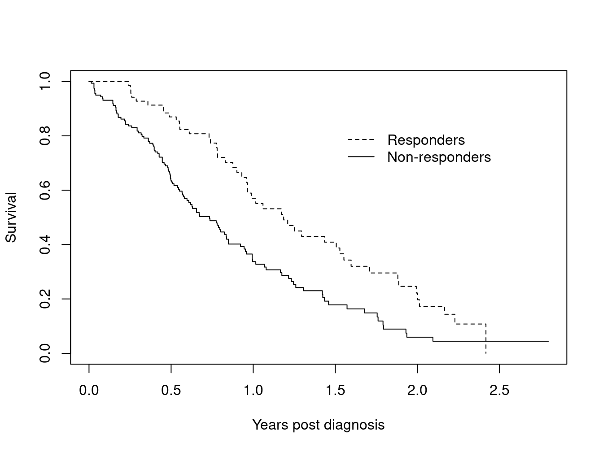
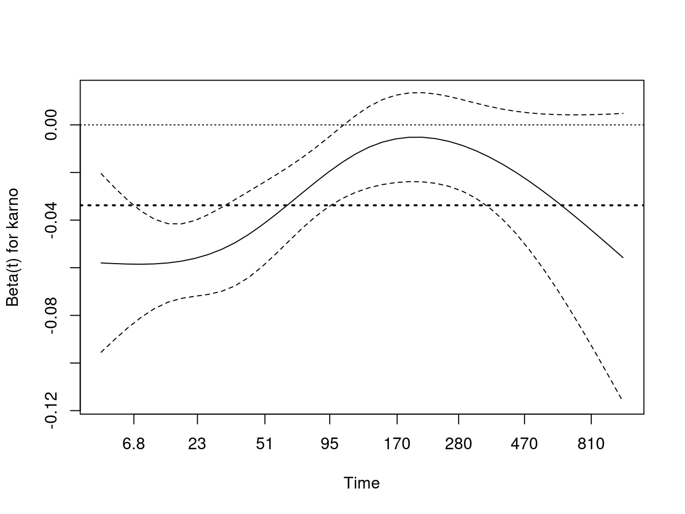
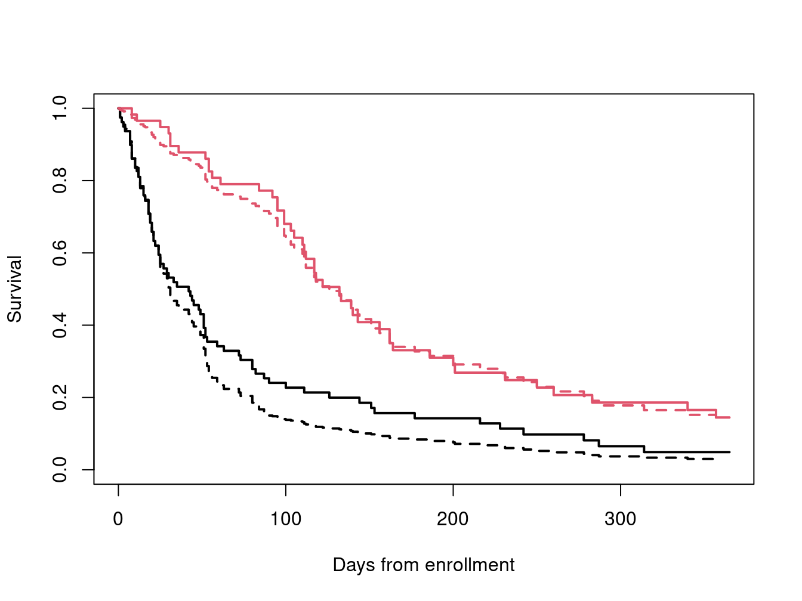
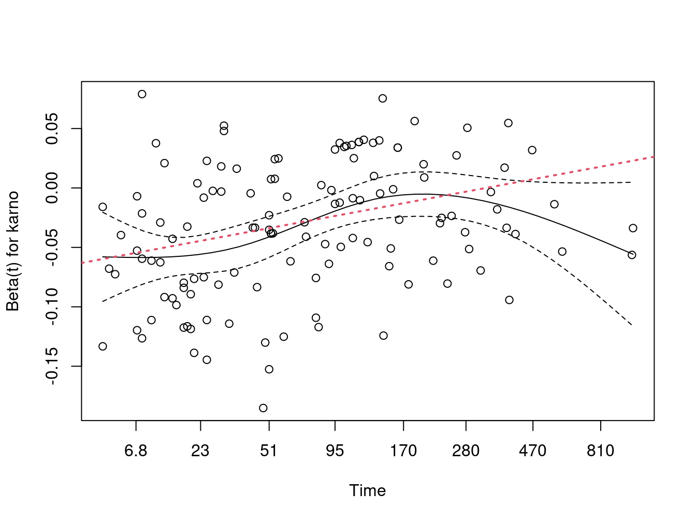
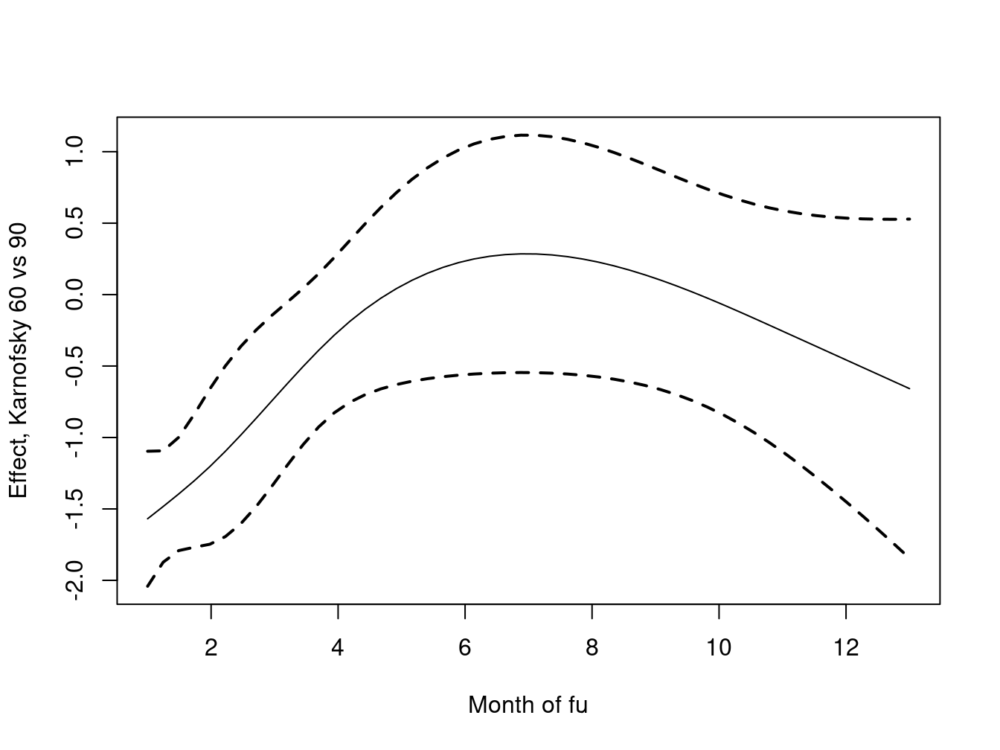

#> subject time1 time2 death creatinine
#> 1 5 0 90 0 0.9
#> 2 5 90 120 0 1.5
#> 3 5 120 185 1 1.2Using Time-Dependent Covariates in the Cox Model
1 Introduction
This vignette covers 3 different but interrelated concepts:
- An introduction to time-dependent covariates, along with some of the most common mistakes.
- Tools for creating time-dependent covariates, or rather the datasets used to encode them.
- Time-dependent coefficients.
2 Time-dependent covariates
One of the strengths of the Cox model is its ability to encompass covariates that change over time. The practical reason that time-dependent covariates work is based on the underlying way in which the Cox model works: at each event time the program compares the current covariate values of the subject who had the event to the current values of all others who were at risk at that time. One can think of it as a lottery model, where at each death time there is a drawing to decide which subject “wins” the event. Each subject’s risk score \(\exp(X\beta)\) determines how likely they are to win, e.g., how many “tickets” they have purchased for the drawing. The model tries to assign a risk score to each subject that best predicts the outcome of each drawing based on
- The risk set: which subjects are present for each event; the set of those able to “win the prize”.
- The covariate values of each subject just prior to the event time.
The model has a theoretical foundation in martingale theory, a mathematical construct which arose out of the study of games of chance. A key underlying condition for a martingale-like game is that present actions depend only on the past. The decision of whether to play (is one in the risk set or not) and the size of a bet (covariates) can depend in any way on prior bets and patterns of won/lost, but cannot look into the future. If this holds then multiple properties can be proven about the resulting process.
A simple way to code time-dependent covariates uses intervals of time. Consider a subject with follow-up from time 0 to death at 185 days, and assume that we have a time-dependent covariate (creatinine) that was measured at day 0, 90 and 120 with values of 0.9, 1.5, and 1.2 mg/dl. A way to encode that data for the computer is to break the subject’s time into 3 time intervals 0-90, 90-120, 120-185, with one row of data for each interval. The data might look like the following
We read this as stating that over the interval from 0 to 90 the creatinine for subject “5” was 0.9 (last known level), and that this interval did not end in a death. The underlying code treats intervals as open on the left and closed on the right, e.g. the creatinine on exactly day 90 is 0.9. One way to think of this is that all changes for a given day (covariates or status) are recorded at the start of the next interval.
The key rule for time-dependent covariates in a Cox model is simple and essentially the same as that for gambling: you cannot look into the future. A covariate may change in any way based on past data or outcomes, but it may not reach forward in time. In the above simple dataset this means that we cannot add a linear interpolation between the creatinine values 0.9 and 1.5 to get a predicted value of 1.2 on day 45; on day 45 the later value of 1.5 has not yet been seen. Covariate values start at the beginning of the interval while endpoints happen at the end of the interval.
As an example consider the Mayo Clinic Study of Aging (MCSA) study which enrolled a stratified random sample from the population of Olmsted County and then followed them forward in time. Consider a table which compares baseline covariates for those who were identified as having mild cognitive impairment (MCI) at baseline versus those who were cognitively normal. This is a legal table. However, a table that compared subjects who did or did not progress to MCI during follow-up would be invalid.
One of the more well known examples of this error is analysis by treatment response: at the end of a trial a survival curve is made comparing those who had an early response to treatment (shrinkage of tumor, lowering of cholesterol, or whatever) to those who did not, and it discovered that responders have a better curve. A Cox model fit to the same data will demonstrate a strong “significant” effect. The problem arises because any early deaths, those that occur before response can be assessed, will all be assigned to the non-responder group, even deaths that have nothing to do with the condition under study. Below is a simple example based on the advanced lung cancer dataset. Assume that subjects came in monthly for 12 cycles of treatment, and randomly declare a “response” for 5% of the subjects at each visit.
set.seed(1953) # a good year
nvisit <- floor(pmin(lung$time/30.5, 12))
response <- rbinom(nrow(lung), nvisit, .05) > 0
badfit <- survfit(Surv(time/365.25, status) ~ response, data=lung)
plot(badfit, mark.time=FALSE, lty=1:2,
xlab="Years post diagnosis", ylab="Survival")
legend(1.5, .85, c("Responders", "Non-responders"),
lty=2:1, bty='n')
What is most surprising about this error is the size of the false effect that is produced. A Cox model using the above data reports a hazard ratio of 1.9 fold with a p-value of less than 1 in 1000.
The alarm about this incorrect approach has been sounded often (1983; 1996; 2008) but the analysis is routinely re-discovered. A slightly subtler form of the error is discussed in Redmond et al. (1983). The exploration was motivated by a flawed analysis presented in Bonadonna et al. (1981). Breast cancer chemotherapy patients were divided into three groups based on whether the patient eventually received >85%, 65–85% or <65% of the dose planned at the start of their treatment. This approach leads to a severe bias since early deaths do not finish all their cycles of chemotherapy and hence by definition get a lower dose. It is early death which predicts a low total dose, and not vice-versa. A proportional hazards model using total dose received shows a very strong effect for dose, so much so that it could encourage a treating physician to defer necessary dose reductions in response to treatment toxicity. This false result actively harmed patients.
Redmond also looked at a further variant of this: create a variable \(p\) for each subject which is the fraction of the the target dose, received up to the last entry for that subject. A subject who died after receiving only 6 weeks of a planned 12 week regimen could still score 100%. This looks like it should cure the bias issue, but it turns out to give bias in the other direction. The reason is that dose reductions due to toxicity occur more often in the later cycles of treatment, and thus living longer leads to smaller values of \(p\). A proportional hazards regression fit to \(p\) implies that a smaller dose is protective! The proper approach is to code the predictor as a time-dependent covariate. For treatment response this will be a variable that starts at 0 for all subjects and is recoded to 1 only when the response occurs. For dose it would measure cumulative dose to date.
There are many variations on the error: interpolation of the values of a laboratory test linearly between observation times, removing subjects who do not finish the treatment plan, imputing the date of an adverse event as midway between observation times, etc. Using future data will often generate large positive or negative bias in the coefficients, but sometimes it generates little bias at all. It is nearly impossible to predict a priori which of these will occur in any given dataset. Using such a covariate is similar to jogging across a Los Angeles freeway: disaster is not guaranteed — but it is likely.
The most common way to encode time-dependent covariates is to use the (start, stop] form of the model.
fit <- coxph(Surv(time1, time2, status) ~ age + creatinine,
data=mydata)In dataset mydata a patient might have the following observations
| subject | time1 | time2 | status | age | creatinine | … |
|---|---|---|---|---|---|---|
| 1 | 0 | 15 | 0 | 25 | 1.3 | |
| 1 | 15 | 46 | 0 | 25 | 1.5 | |
| 1 | 46 | 73 | 0 | 25 | 1.4 | |
| 1 | 73 | 100 | 1 | 25 | 1.6 |
In this case the variable age = age at entry to the study stays the same from line to line, while the value of creatinine varies and is treated as 1.3 over the interval \((0, 15]\), 1.5 over \((15, 46]\), etc. The intervals are open on the left and closed on the right, which means that the creatinine is taken to be 1.3 on day 15. The status variable describes whether or not each interval ends in an event.
One common question with this data setup is whether we need to worry about correlated data, since a given subject has multiple observations. The answer is no, we do not. The reason is that this representation is simply a programming trick. The likelihood equations at any time point use only one copy of any subject, the program picks out the correct row of data at each time. There two exceptions to this rule:
- When subjects have multiple events, then the rows for the events are correlated within subject and a cluster variance is needed.
- When a subject appears in overlapping intervals. This however is almost always a data error, since it corresponds to two copies of the subject being present in the same strata at the same time, e.g., she could meet herself at a party.
A subject can be at risk in multiple strata at the same time, however. This corresponds to being simultaneously at risk for two distinct outcomes.
3 Building time-dependent sets with tmerge
3.1 The function
A useful function for building datasets is tmerge, which is part of the survival library. The idea is to build up a time-dependent dataset one endpoint at a time. The primary arguments are
- data1: the base dataset that will be added onto
- data2: the source for new information
- id: the subject identifier in the new data
- \(\ldots\): additional arguments that add variables to the dataset
- tstart, tstop: used to set the time range for each subject
- options
The created dataset has three new variables (at least), which are id, tstart and tstop.
The key part of the call are the “\(\ldots\)” arguments which each can be one of four types: tdc() and cumtdc() add a time-dependent variable, event() and cumevent() add a new endpoint. In the survival routines time intervals are open on the left and closed on the right, i.e., (tstart, tstop]. Time-dependent covariates apply from the start of an interval and events occur at the end of an interval. If a dataset already had intervals of (0,10] and (10, 14] a new time dependent covariate or event at time 8 would lead to three intervals of (0,8], (8,10], and (10,14]; the new time-dependent covariate value would be added to the second interval, a new event would be added to the first one.
The basic form of the function is
newdata <- tmerge(data1, data2, id, newvar=tdc(time, value), ...)Where data1 is the starting dataset and additions to the data are taken from data2. The idea behind the function is that each addition will be “slipped in” to the original data in the same way that one would add a new folder into a file cabinet. It is a complex function, and we illustrate it below with a set of examples that sequentially reveal its features.
3.2 CGD dataset
Chronic granulomatous disease (CGD) is a heterogeneous group of uncommon inherited disorders characterized by recurrent pyogenic infections that usually begin early in life and may lead to death in childhood. In 1986, Genentech, Inc. conducted a randomized, double-blind, placebo-controlled trial in 128 CGD patients who received Genentech’s humanized interferon gamma (rIFN-g) or placebo three times daily for a year. Data were collected on all serious infections until the end of followup, which occurred before day 400 for most patients. One patient was taken off on the day of his last infection; all others have some followup after their last episode.
Below are the first 10 observations, see the help page for cgd0 for the full list of variable names. The last few columns contain the duration of follow-up for the subject followed by infection times. Subject 1 was followed for 414 days and had infections on days 219 and 373, subject 2 had 7 infections and subject 3 had none.
1 204 082888 1 2 12 147.0 62.0 2 2 2 2 414 219 373
2 204 082888 0 1 15 159.0 47.5 2 2 1 2 439 8 26 152 241 249 322 350
3 204 082988 1 1 19 171.0 72.7 1 2 1 2 382
4 204 091388 1 1 12 142.0 34.0 1 2 1 2 388
5 238 092888 0 1 17 162.5 52.7 1 2 1 1 383 246 253
6 245 093088 1 2 44 153.3 45.0 2 2 2 2 364
7 245 093088 0 1 22 175.0 59.7 1 2 1 2 364 292
8 245 093088 1 1 7 111.0 17.4 1 2 1 2 363
9 238 100488 0 1 27 176.0 82.8 2 2 1 1 349 294
10 238 100488 1 1 5 113.0 19.5 1 2 1 1 371The dataset is included as cgd0 in the survival library. Here is the R printout of the first four subjects.
cgd0[1:4,]
#> id center random treat sex age height weight inherit steroids
#> 1 1 204 82888 1 2 12 147 62.0 2 2
#> 2 2 204 82888 0 1 15 159 47.5 2 2
#> 3 3 204 82988 1 1 19 171 72.7 1 2
#> 4 4 204 91388 1 1 12 142 34.0 1 2
#> propylac hos.cat futime etime1 etime2 etime3 etime4 etime5 etime6
#> 1 2 2 414 219 373 NA NA NA NA
#> 2 1 2 439 8 26 152 241 249 322
#> 3 1 2 382 NA NA NA NA NA NA
#> 4 1 2 388 NA NA NA NA NA NA
#> etime7
#> 1 NA
#> 2 350
#> 3 NA
#> 4 NAWe want to turn this into a dataset that has survival in a counting process form.
- Each row of the resulting dataset represents a time interval (time1, time2] which is open on the left and closed on the right. Covariate values for each row are the covariate values that apply over that interval.
- The event variable for each row \(i\) is 1 if the time interval ends with an event and 0 otherwise.
We don’t need variables etime1–etime7 in the final dataset, so they are left out of the data1 argument in the first call.
dim(cgd0)
#> [1] 128 20
newcgd <- tmerge(data1=cgd0[, 1:13], data2=cgd0, id=id, tstop=futime)
newcgd <- tmerge(newcgd, cgd0, id=id, infect = event(etime1))
newcgd <- tmerge(newcgd, cgd0, id=id, infect = event(etime2))
newcgd <- tmerge(newcgd, cgd0, id=id, infect = event(etime3))
newcgd <- tmerge(newcgd, cgd0, id=id, infect = event(etime4))
newcgd <- tmerge(newcgd, cgd0, id=id, infect = event(etime5))
newcgd <- tmerge(newcgd, cgd0, id=id, infect = event(etime6))
newcgd <- tmerge(newcgd, cgd0, id=id, infect = event(etime7))
newcgd <- tmerge(newcgd, newcgd, id, enum=cumtdc(tstart))
dim(newcgd)
#> [1] 203 17
newcgd[1:5,c(1, 4:6, 13:17)]
#> id treat sex age futime tstart tstop infect enum
#> 1 1 1 2 12 414 0 219 1 1
#> 2 1 1 2 12 414 219 373 1 2
#> 3 1 1 2 12 414 373 414 0 3
#> 4 2 0 1 15 439 0 8 1 1
#> 5 2 0 1 15 439 8 26 1 2
summary(newcgd)
#> Call:
#> tmerge(data1 = newcgd, data2 = newcgd, id = id, enum = cumtdc(tstart))
#>
#> early late gap within boundary leading trailing tied missid
#> infect 0 0 0 44 0 0 0 0 0
#> infect 0 0 0 16 0 0 1 0 0
#> infect 0 0 0 8 0 0 0 0 0
#> infect 0 0 0 3 0 0 0 0 0
#> infect 0 0 0 2 0 0 0 0 0
#> infect 0 0 0 1 0 0 0 0 0
#> infect 0 0 0 1 0 0 0 0 0
#> enum 0 0 0 0 75 128 0 0 0
coxph(Surv(tstart, tstop, infect) ~ treat + inherit + steroids,
data =newcgd, cluster = id)
#> Call:
#> coxph(formula = Surv(tstart, tstop, infect) ~ treat + inherit +
#> steroids, data = newcgd, cluster = id)
#>
#> coef exp(coef) se(coef) robust se z p
#> treat -1.0722 0.3422 0.2619 0.3118 -3.438 0.000585
#> inherit 0.1777 1.1944 0.2356 0.3180 0.559 0.576395
#> steroids -0.7726 0.4618 0.5169 0.4687 -1.648 0.099310
#>
#> Likelihood ratio test=22.49 on 3 df, p=5.149e-05
#> n= 203, number of events= 76These lines show the canonical way to use tmerge: each call adds one more bit of information to the dataset.
- The first call sets the time range for each subject to be from 0 (default) to last follow-up. If a later call tried to add an event outside that range, at time = -2 say, that addition would be ignored. The range can be set explicitly by using the tstop and (optional) tstart arguments, or implicitly as will be done in the heart transplant example below. This first result has 128 rows, the same number as
cgd0. - Each additional call then adds either an endpoint or a covariate, splitting individual rows of the input into two as necessary. An
eventorcumeventdirective adds events, while atdcorcumtdccommand adds a time-dependent covariate. Events happen at the ends of intervals and time-dependent covariates change at the start of an interval.
- Additions from
data2with a missing time value are ignored. - The result of
tmergeis a data frame with a few extra attributes. One of these, tcount, is designed to help visualize the process, it is printed out by the summary function. Assume that a subject already had 3 intervals of (2,5), (5,10) and (14,40). A new event added at time 1 would be “early” while one at time 50 is after any interval and would be recorded as “late”. An event at time 3 is within an interval, one at 5 is on the border of two intervals, one at 14 is at the leading edge of an interval, one at time 10 in on the trailing edge, and one at time 11 is in a gap. In this dataset all new additions fell strictly within prior intervals. We also see that etime6 and etime7 each added only a single event to the data. Only one subject had more than 5 infections. - If two observations in data2 for a single person share exactly the same time, the created value will be the later contribution for
tdc()orevent()calls,cumtdc()andcumevent()will add. The “tied” column tells how often this happened; in some datasets this behavior might not be desired and one would need to break the ties before calling tmerge. - If there are observations in
data2that do not match any of the identifiers indata1they count in the `missid’ column. - The last tmerge call adds a simple time-dependent variable
enumwhich is a running observation count for each subject. This can often be a useful variable in later models or processing, e.g.enum==1selects off the first row for each subject. - The extra attributes of the data frame are ephemeral: they will be lost as soon as any further manipulation is done. This is intentional. The reason is that these may be invalid if, for instance, a subset of the data was selected.
- One can verify that the resulting dataset is equivalent to
cgd, a (start, stop] version of the CGD data in the survival library, which had been created by hand several years earlier.
The tmerge function processes arguments sequentially, and the above example can be rewritten as below. There is no computational advantage of one form versus the other.
test <- tmerge(cgd0[, 1:13], cgd0, id=id, tstop=futime,
infect = event(etime1), infect= event(etime2),
infect = event(etime3), infect= event(etime4),
infect = event(etime5), infect= event(etime6),
infect = event(etime7))
test <- tmerge(test, test, id= id, enum = cumtdc(tstart))
all.equal(newcgd, test)
#> [1] "Attributes: < Component \"call\": target, current do not match when deparsed >"This example is atypical in that we have used a wide dataset, one with multiple outcomes per subject on a single line. The tmerge function was primarily designed to work with long data. An underlying issue is that when you create a new variable with tmerge from multiple source variables, and those variables are not of exactly the same structure, then tmerge can become confused. If etime1 was numeric and etime2 had a difftime class for example. If issues arise create a long form dataset and merge that in, as shown below. Both the data.table and tidyr libraries have well regarded functions to do this; below we use the reshape function from base R.
# create a long dataset with the recurrences
temp <- reshape(cgd0[c(1, 14:20)], varying= 2:8, v.names="etime",
idvar="id", direction="long")
cgdrecur <- subset(temp, !is.na(etime)) # toss missings (not essential)
newcgd <- tmerge(data1=cgd0[, 1:13], data2=cgd0, id=id, tstop=futime)
newcgd <- tmerge(newcgd, cgdrecur, id=id, infect= event(etime))3.3 Stanford heart transplant
The jasa dataset contains information from the Stanford heart transplant study, in the form that it appeared in the J American Statistical Association paper of Crowley and Hu (1977). The dataset has one line per subject which contains the baseline covariates along with dates of enrollment, transplant, and death or last follow-up. We want to create transplant as a time-dependent covariate. As is often the case with real data, this dataset contains a few anomalies that need to be dealt with when setting up an analysis dataset.
One subject died on the day of entry. However (0,0) is an illegal time interval for the
coxphroutine.
It suffices to have them die on day 0.5. An alternative is to add 1 day to everyone’s follow-up, e.g., subject 2 who enrolled on Jan 2 1968 and died on Jan 7 would be credited with 6 days. (This is what Kalbfleisch and Prentice do in their textbook.) The result of the finalcoxphcall is the same from either strategy.A subject transplanted on day 10 is considered to have been on medical treatment for days 1–10 and as transplanted starting on day 11. That is, except for patient 38 who died on the same day as their procedure. They should be treated as a transplant death; the problem is resolved by moving this forward in time by .5 day.
The treatment coefficients in table 6.1 of the definitive analysis found in Kalbfleisch and Prentice (2002) will only be obtained if covariates are defined in precisely the same way, since their models include interactions. (Table 5.2 in the original edition of the book). For age this is (age in days)/ 365.25 - 48 years, and for year of enrollment it is the number of years since the start of the study: (entry date - 1967/10/1)/365.25. (Until I figured this out I would get occasional “why is coxph giving the wrong answers” emails.)
Since time is in days the fractional time of 0.5 could be any value between 0 and 1, our choice will not affect the results.
jasa$subject <- 1:nrow(jasa) #we need an identifier variable
tdata <- with(jasa, data.frame(subject = subject,
futime= pmax(.5, fu.date - accept.dt),
txtime= ifelse(tx.date== fu.date,
(tx.date -accept.dt) -.5,
(tx.date - accept.dt)),
fustat = fustat
))
xdata <- tmerge(jasa, tdata, id=subject,
death = event(futime, fustat),
transplant = tdc(txtime),
options= list(idname="subject"))
sdata <- tmerge(jasa, tdata, id=subject,
death = event(futime, fustat),
trt = tdc(txtime),
options= list(idname="subject"))
summary(sdata)
#> Call:
#> tmerge(data1 = jasa, data2 = tdata, id = subject, death = event(futime,
#> fustat), trt = tdc(txtime), options = list(idname = "subject"))
#>
#> early late gap within boundary leading trailing tied missid
#> death 0 0 0 0 0 0 103 0 0
#> trt 0 0 0 67 0 2 0 0 0
sdata$age <- sdata$age -48
sdata$year <- as.numeric(sdata$accept.dt - as.Date("1967-10-01"))/365.25
# model 6 of the table in K&P
coxph(Surv(tstart, tstop, death) ~ age*trt + surgery + year,
data= sdata, ties="breslow")
#> Call:
#> coxph(formula = Surv(tstart, tstop, death) ~ age * trt + surgery +
#> year, data = sdata, ties = "breslow")
#>
#> coef exp(coef) se(coef) z p
#> age 0.01527 1.01539 0.01750 0.873 0.3828
#> trt 0.04457 1.04558 0.32171 0.139 0.8898
#> surgery -0.62113 0.53734 0.36786 -1.688 0.0913
#> year -0.13608 0.87278 0.07090 -1.919 0.0550
#> age:trt 0.02703 1.02740 0.02714 0.996 0.3193
#>
#> Likelihood ratio test=16.06 on 5 df, p=0.006687
#> n= 170, number of events= 75This example shows a special case for the tmerge function that is quite common: if the first created variable is an event then the time range for each subject is inferred to be from 0 to that event time: explicit tstop and tstart arguments are not required. It also makes use of a two argument form of event. Each of the event and cumevent functions may have a second argument, which if present will be used as the value for the event code. If this second argument is not present a value of 1 is used. If an event variable is already a part of data1, then our updates make changes to that variable, possibly adding more events. This feature is what allowed for the infection indicator to be build up incrementally in the cgd example above.
The tdc and cumtdc arguments can have 1, 2 or three arguments. The first is always the time point, the second, if present, is the value to be inserted, and an optional third argument is the initial value. If the tdc call has a single argument the result is always a 0/1 variable, 0 before the time point and 1 after. For the 2 or three argument form, the starting value before the first definition of the new variable (before the first time point) will be the initial value. The default for the initial value is NA, the value of the tdcstart option. If the tdc variable being created is already a part of data1, the old value is replaced wholesale, it is not updated. This differs from the behavior for events. Although there is a use case for updating an existing time-dependent value, say from a new data source, our experience had been that the much more common case was accidental reuse of an existing name, resulting in a chimeric mishmash between an existing baseline covariate and the additions, and creating a column which was valid for neither. Equally, some examples showed that we can not reliably update a tdc, i.e., cases where the correct answer is unclear.
The tcount table for the above fit shows all the deaths at the trailing edge of their interval, which is expected since the time of death or last follow-up was used to define each subject’s interval of risk. Two of the transplants happened on day 0 and are listed as occurring on the leading edge of the first follow-up interval for the subject. The other 67 transplants were strictly within the (0, last follow up) interval of each subject.
The tcount summary table has the following columns:
- early: occurs prior to the start of the subject’s timeframe.
- late: occurs after the end of a subjects timeframe.
- gap: occurs in a gap between intervals at risk. If someone is at risk of the event from day 0 to 30, and then from day 50 to day 70. A count would occur under
gap, if the covariate changed on day 40. - within: in an existing time interval.
- boundary: at the same time as the beginning/end of an interval pair such as (0,10), (10, 25).
- leading: occurs at the start of an interval.
- trailing: occurs at the end of an interval.
- tied: two values of the same covariate, at the same time, for the same subject (e.g., multiple blood pressure values on the same day).
- missid: subjects in the second dataset that are not in the first dataset.
Requirements for the final analysis dataset:
- Each subject’s timeline is well defined.
- If the subject is at risk at some time t, the dataset contains an interval for them that includes t.
- Only 1 copy of the subject exists at any given time, i.e., there are no overlapping intervals.
- All intervals are of positive length (start_time \(\neq\) stop_time).
- Outcomes are distinct; a subject cannot have two events at the same time.
Things to remember when interpreting the tcount summary:
- Time-dependent covariates that occur before the defined follow-up interval (i.e., early) or during a gap in time do not generate new splits, but do set the covariate for future times. Rationale: if diabetes was diagnosed when the patient was not under observation, the patient will still have diabetes when s/he returns to observation.
- Events that are early, in a gap, or late are not used in the analysis. The rationale for this is that we don’t know who the appropriate comparison group is for these events, so they must be ignored.
- Date errors are one of the more common causes for early/late events; so they are always worth checking.
- “Tied” values, i.e., values measured at the same time for the same subject, are also noted. For instance, assume that the input dataset has two triglyceride observations, for the same subject Smith, on day 135. Since we can’t create a data row with times (135, 135) only the second triglyceride value will be retained.
- Missing times are ignored since the split location is unknown. Missing values for a tdc covariate are also ignored, resulting in “last value carried forward” as the default behavior. (There are arguments to override the default and allow a covariate to revert to missing.)
3.4 PBC data
The pbc dataset contains baseline data and follow-up status for a set of subjects with primary biliary cirrhosis, while the pbcseq dataset contains repeated laboratory values for those subjects.
The first dataset contains data on 312 subjects in a clinical trial plus 106 that agreed to be followed off protocol, the second dataset has data only on the trial subjects.
temp <- subset(pbc, id <= 312, select=c(id:sex, stage)) # baseline
pbc2 <- tmerge(temp, temp, id=id, death = event(time, status)) #set range
pbc2 <- tmerge(pbc2, pbcseq, id=id, ascites = tdc(day, ascites),
bili = tdc(day, bili), albumin = tdc(day, albumin),
protime = tdc(day, protime), alk.phos = tdc(day, alk.phos))
fit1 <- coxph(Surv(time, status==2) ~ log(bili) + log(protime), pbc)
fit2 <- coxph(Surv(tstart, tstop, death==2) ~ log(bili) + log(protime), pbc2)
rbind('baseline fit' = coef(fit1),
'time-dependent' = coef(fit2))
#> log(bili) log(protime)
#> baseline fit 0.930592 2.890573
#> time-dependent 1.241214 3.983400We start the build with a baseline dataset that has a subset of the variables. This is due to my own frugality — I happen to like datasets that are more trim. It is not a requirement of the tmerge function, however, and a user is certainly free to skip the first step above and build pbc2 directly from dataset pbc.
The coefficients of bilirubin and prothrombin time are somewhat larger in the time-dependent analysis than the fit using only baseline values. In this autoimmune disease there is steady progression of liver damage, accompanied by a steady rise in these two markers of dysfunction. The baseline analysis captures patients’ disease status at the start, the time-dependent analysis is able to account for those who progress more quickly. In the pbc dataset the status variable is 0= censored, 1= liver transplant and 2= death; the above analyses were models of time to death, censoring at transplant. (At the time of the PBC study liver transplantation was still in its infancy and it is fair to view the 19/312 subjects who received the procedure as a random sample. In the modern era there are far more waiting recipients than organs and available livers are directed to those patients who illness is most dire; censoring at transplant would not lead to an interpretable result.)
By default tmerge ignores any updates from data2 that have a missing value for either the time or the value. In the pbcseq dataset there are several observations with a missing alkaline phosphotase value. A consequence of this behavior is that the pbc2 dataset effectively uses “last value carried forward” values for alk.phos, replacing those missing values. Subject 6 for instance has a total follow-up of 2503, and alk.phos values of 682 and NA on days 1492 and 2453, respectively; in the final dataset it is coded 682 from day 1492 until last follow up. One can change this default by adding options=list(na.rm=FALSE) to the second call above, in which case the alkaline phosphotase value over the interval (2453, 2503] will become missing. Any tdc calls with a missing time are still ignored, independent of the na.rm value, since we would not know where to insert them.
#Can also use summary(pbc2)
attr(pbc2, "tcount")
#> early late gap within boundary leading trailing tied missid
#> death 0 0 0 0 0 0 312 0 0
#> ascites 0 131 0 1442 0 312 0 0 0
#> bili 0 138 0 53 1442 312 0 0 0
#> albumin 0 138 0 0 1495 312 0 0 0
#> protime 0 138 0 0 1495 312 0 0 0
#> alk.phos 0 131 0 0 1442 312 0 0 0The tcount results are interesting. For the first addition of ascites we have 312 observations on a leading edge of follow up, which is all of the baseline lab values at time 0, and 1442 further additions within the subjects’ follow-up interval. The latter cause a new break point to be added at each of these intermediate laboratory dates, for subsequent additions these 1442 times lie on a boundary of two intervals. Another 131 non-missing alkaline phosphotase values occurred after the last follow-up date of the pbc dataset and are ignored. Bilirubin is missing on no subjects, so its addition creates a few more unique break points in the follow-up, namely those clinical visits for which the ascites value was missing.
The data for the pbcseq dataset was assembled at a later calendar time than the primary dataset. Since having lab test results is a certain marker that the patient is still alive, would a better analysis have used this test information to extend the last follow-up date for these 138 “late” subjects with a later laboratory date? Not necessarily.
Odd things happen in survival analysis when risk sets are extended piecemeal. A basic tenet of the Cox model is that if someone is marked as being “at risk” over some interval \((s, t)\), this means that “if they had had an event over that interval, we would have recorded it.” Say someone ended their initial follow-up time at 3000 days and then had a lab test at 3350 days (subjects returned about once a year). If we only extend the time of those who had a test, then saying that this subject was at risk during the interval (3000, 3350) is false: if they had died in that interval, they would not have had the lab test and would not obtained the extension, nor would their death have been updated in the original pbc dataset. The cutoff rule of tmerge is purposefully conservative to avoid creating such anomalies.
In the case of the PBC dataset this author happens to know that active follow-up was continued for all subjects, both those that did and did not return for further laboratory tests. This updated follow-up information is included in the pbcseq data and could have been used to set a wider time range. Such is not always the case, however. Automatic additions to a dataset via electronic systems can be particularly troublesome. One case from the author’s experience involved a study of patient outcomes after organ transplant. Cases were actively followed up for 3 years, at which time priorities shifted and the clerical staff responsible for the active follow-up were reassigned. Automatic updates from a state death index continued to accumulate, however. A Kaplan-Meier curve computed at 5 years showed the remarkable result of a 3 year survival of .9 followed by a precipitous drop to 0 at 5 years! This is because there was, by definition, 100% mortality in all those subjects with more than 3 years of supposed follow-up.
3.5 Time delay and other options
The options argument to the tmerge routine is a list with one or more of the following five elements, listed below along with their default values.
- idname = ‘id’
- tstartname = ‘tstart’
- tstopname = ‘tstop’
- na.rm = TRUE
- delay = 0
The first three of these are the variable names that will be used for the identifier, start, and stop variables which are added to the output dataset. They only need to be specified one time within a series of tmerge calls in order to effect a change. The na.rm option has been discussed above; it affects tdc() and cumtdc() directives within a single tmerge call. The delay option causes any tdc or cumtdc action in the tmerge call to be delayed by a fixed amount. The final two tmerge calls below are almost identical in their action:
temp <- subset(pbc, id <= 312, select=c(id:sex, stage))
pbc2 <- tmerge(temp, temp, id=id, death = event(time, status))
pbc2a <- tmerge(pbc2, pbcseq, id=id, ascites = tdc(day, ascites),
bili = tdc(day, bili), options= list(delay=14))
pbc2b <- tmerge(pbc2, pbcseq, id=id, ascites = tdc(day+14, ascites),
bili = tdc(day+14, bili))The difference betweenpbc2a and pbc2b is that the first call does not defer baseline values for each subject, i.e., any value with a time that is on or before the the subject’s first time point, as that will introduce intervals with a missing value into the result.
The more important question is why one would wish to delay or lag a time dependent covariate. One reason is to check for cases of reverse causality. It is sometimes the case that a covariate measured soon before death is not a predictor of death but rather is simply a marker for an event that is already in progress. A simple example would the the time-dependent covariate “have called the family for a final visit”. A less obvious one from the author’s experience occurs when a clinical visit spans more than one day, the endpoint is progression, and one or more laboratory results that were used to define “progression” get recorded in the dataset 1-2 days before the progression event. (They were perhaps pulled automatically from a laboratory information system). One then ends up with the tautology of a test value predicting its own result.
Even more subtle biases can occur via coding errors. For any dataset containing constructed time-dependent covariates, it has become the author’s practice to re-run the analyses after adding a 7-14 day lag to key variables. When the results show a substantial change, and this is not infrequent, understanding why this occurred is an critical step. Even if there is not an actual error, one has to question the value of a covariate that can predict death within the next week but fails for a longer horizon.
3.6 Cumulative events
The action of the cumevent operator is different than cumtdc in several ways. Say that we have a subject with outcomes of one type at times 5, 10, and 15 and another type at times 6 and 15, with a follow-up interval of 0 to 20. For illustration I’ll call the first event ‘asthma’ and the second ‘IBD’ (a disease flare in inflammatory bowel disease). A resulting dataset would have the following form:
dat <- data.frame(interval=c('(0,5]','(5,6]','(6,10]','(10,15]','(15,20]'),
asthma1=c(0,1,1,2,3),IBD1=c(0,0,1,1,2),
asthma2=c(1,0,2,3,0),IBD2=c(0,1,0,2,0))
gt(dat) |>
tab_spanner(label="cumtdc",
columns = c(asthma1, IBD1)) |>
tab_spanner(label="cumevent",
columns=c(asthma2,IBD2)) |>
cols_label(asthma1="asthma",IBD1="IBD",
asthma2="asthma",IBD2="IBD")| interval |
cumtdc
|
cumevent
|
||
|---|---|---|---|---|
| asthma | IBD | asthma | IBD | |
| (0,5] | 0 | 0 | 1 | 0 |
| (5,6] | 1 | 0 | 0 | 1 |
| (6,10] | 1 | 1 | 2 | 0 |
| (10,15] | 2 | 1 | 3 | 2 |
| (15,20] | 3 | 2 | 0 | 0 |
Events happen at the ends of an interval and time-dependent covariates change the following intervals. More importantly, time-dependent covariates persist while events do not, a cumevent action simply changes the label attached to an event.
3.6.1 REP
The motivating case for tmerge came from a particular problem: the Rochester Epidemiology Project has tracked all subjects living in Olmsted County, Minnesota, from 1965 to the present. For an investigation of cumulative comorbidity we had three datasets
- base: demographic data such as sex and birth date
- timeline: one or more rows for each subject containing age intervals during which they were a resident of the county.
The important variables are id, age1 and age2; each (age1, age2) pair marks an interval of residence. Disjoint intervals are not uncommon. - outcome: one row for the first occurrence of each outcome of interest.
The outcomes were 20 comorbid conditions as defined by a particular research initiative from the National Institutes of Health.
The structure for building the data is shown below. (The data for this example unfortunately cannot be included with the survival library so the code is shown but not executed.)
newd <- tmerge(data1=base, data2=timeline, id=repid, tstart=age1,
tstop=age2, options(id="repid"))
newd <- tmerge(newd, outcome, id=repid, mcount = cumtdc(age))
newd <- tmerge(newd, subset(outcome, event='diabetes'),
diabetes= tdc(age))
newd <- tmerge(newd, subset(outcome, event='arthritis'),
arthritis= tdc(age))The first call to tmerge adds the time line for each observation to the baseline data. For this first call both data1 and data2 must contain a copy of the id variable (here repid), and data1 is constrained to have only a single line for each id value. (Subjects have a single baseline.) Each subsequent call adds a new variable to the dataset. The second line creates a covariate which is a cumulative count of the number of comorbidities thus far for each subject. The third line creates a time-dependent covariate (tdc) which will be 0 until the age of diabetes and is 1 thereafter, the fourth line creates a time-dependent variable for the presence of arthritis.
Time-dependent covariates that occur before the start of a subject’s follow-up interval or during a gap in time do not generate a new time point, but they do set the value of that covariate for future times. Events that occur in a gap are not counted. The rationale is that during a subject’s time within the county we would like the variable “prior diagnosis of diabetes” to be accurate, even if that diagnosis occurred during a prior period when the subject was not a resident. For events outside of the time line, we have no way to know who the appropriate comparison group is, and so must ignore those events. (Formally, the risk set would be the set of all non-residents who, if they were to have had an event at the same age, we would find out about it because they will later move to the county, have a medical encounter here, and have that event written into the “prior conditions” section of their medical record.)
4 Time-dependent coefficients
Time-dependent covariates and time-dependent coefficients are two different extensions of a Cox model, as shown in the two equations below.
\[ \lambda(t) = \lambda_0(t) e^{\beta X(t)} \tag{1}\] \[ \lambda(t) = \lambda_0(t) e^{\beta(t) X} \tag{2}\]
Equation 1 is a time-dependent covariate, a common and well understood usage. Equation 2 has a time-dependent coefficient. These models are much less common, but represent one way to deal with non-proportional hazards – the proportional hazard assumption is precisely that \(\beta(t) = \beta\), i.e., the coefficient does not change over time. The cox.zph function will plot an estimate of \(\beta(t)\) for a study and is used to diagnose and understand non-proportional hazards. The code below shows a test case using the veterans cancer data, with the results plotted in Figure Figure 1.
options(show.signif.stars = FALSE) # display statistical intelligence
vfit <- coxph(Surv(time, status) ~ trt + prior + karno, veteran)
vfit
#> Call:
#> coxph(formula = Surv(time, status) ~ trt + prior + karno, data = veteran)
#>
#> coef exp(coef) se(coef) z p
#> trt 0.180197 1.197453 0.183468 0.982 0.326
#> prior -0.005551 0.994464 0.020225 -0.274 0.784
#> karno -0.033771 0.966793 0.005114 -6.604 4e-11
#>
#> Likelihood ratio test=43.04 on 3 df, p=2.41e-09
#> n= 137, number of events= 128
quantile(veteran$karno)
#> 0% 25% 50% 75% 100%
#> 10 40 60 75 99
zp <- cox.zph(vfit, transform= function(time) log(time +20))
zp
#> chisq df p
#> trt 0.271 1 0.60247
#> prior 2.260 1 0.13275
#> karno 10.694 1 0.00107
#> GLOBAL 16.881 3 0.00075
Karnofsky score is a very important predictor, but its effect is not constant over time as shown by both the test and the plot. Early on it has a large negative effect: the risk for someone at the first quartile is approximately exp(35*.05) = 5.7 fold times that of someone at the third quartile, but by 200 days this has waned and is not much different from one. One explanation is that, in this very acute illness, any measure that is over 6 months old is no longer relevant. Another is that a large portion of subjects with the lowest Karnofsky values have been lost; at 200 days 4% of the remaining subjects had a initial value \(\le 40\) versus 28% at the start.
The proportional hazards model estimates an average hazard over time, the value of which is shown by the dotted horizontal line. The use of an average hazard is often reasonable, the proportional hazards assumption is after all never precisely true. In this case, however, the departure is quite large and a time dependent coefficient is a more useful summary of the actual state. The cox.zph plot is excellent for diagnosis but does not, however, produce a formal fit of \(\beta(t)\). What if we want to fit the model?
4.1 Step functions
One of the simplest extensions is a step function for \(\beta(t)\), i.e., different coefficients over different time intervals. An easy way to do this is to use the survSplit function to break the dataset into time-dependent parts. We will arbitrarily divide the veteran’s data into 3 epochs of the first 3 months, 3-6 months, and greater than 6 months.
vet2 <- survSplit(Surv(time, status) ~ ., data= veteran, cut=c(90, 180),
episode= "tgroup", id="id")
vet2[1:7, c("id", "tstart", "time", "status", "tgroup", "age", "karno")]
#> id tstart time status tgroup age karno
#> 1 1 0 72 1 1 69 60
#> 2 2 0 90 0 1 64 70
#> 3 2 90 180 0 2 64 70
#> 4 2 180 411 1 3 64 70
#> 5 3 0 90 0 1 38 60
#> 6 3 90 180 0 2 38 60
#> 7 3 180 228 1 3 38 60The first subject died at 72 days, his data is unchanged. The second and third subjects contribute time to each of the three intervals.
vfit2 <- coxph(Surv(tstart, time, status) ~ trt + prior +
karno:strata(tgroup), data=vet2)
vfit2
#> Call:
#> coxph(formula = Surv(tstart, time, status) ~ trt + prior + karno:strata(tgroup),
#> data = vet2)
#>
#> coef exp(coef) se(coef) z
#> trt -0.011025 0.989035 0.189062 -0.058
#> prior -0.006107 0.993912 0.020355 -0.300
#> karno:strata(tgroup)tgroup=1 -0.048755 0.952414 0.006222 -7.836
#> karno:strata(tgroup)tgroup=2 0.008050 1.008083 0.012823 0.628
#> karno:strata(tgroup)tgroup=3 -0.008349 0.991686 0.014620 -0.571
#> p
#> trt 0.953
#> prior 0.764
#> karno:strata(tgroup)tgroup=1 4.64e-15
#> karno:strata(tgroup)tgroup=2 0.530
#> karno:strata(tgroup)tgroup=3 0.568
#>
#> Likelihood ratio test=63.04 on 5 df, p=2.857e-12
#> n= 225, number of events= 128
cox.zph(vfit2)
#> chisq df p
#> trt 1.72 1 0.189
#> prior 3.81 1 0.051
#> karno:strata(tgroup) 3.04 3 0.385
#> GLOBAL 8.03 5 0.154A fit to the revised data shows that the effect of baseline Karnofsky score is essentially limited to the first two months. The cox.zph function shows no further time-dependent effect of Karnofsky score. This last is of course no surprise, since we used the original graph to pick the cut points. A “test” that the coefficients for the three intervals are different will be biased by this sequential process and should be viewed with caution.
Survival curves post fit require a little more care. The default curve uses the mean covariate values, which is always problematic and completely useless in this case. Look at the set of saved means for the model:
vfit2$means
#> trt prior
#> 1.471111 2.977778
#> karno:strata(tgroup)tgroup=1 karno:strata(tgroup)tgroup=2
#> 35.662222 19.022222
#> karno:strata(tgroup)tgroup=3
#> 8.444444The default curve will be for someone on treatment arm 1.47 % which applies to no one, and a single set of “blended” values of the Karnofsky score, each times the three Karnofsky coefficients. This is rectified by creating a new dataset with time intervals. We create two hypothetical subjects labeled as “curve 1” and “curve 2”. One has a Karnofsky of 40 and the other a Karnofsky of 75, both on treatment 1 and with no prior therapy. Each has the appropriate values for the time-dependent covariate tgroup, which is 1, 2, 3 over 0–90, 90–180 and 180+ days, respectively. We will draw curves for the first year.
quantile(veteran$karno)
#> 0% 25% 50% 75% 100%
#> 10 40 60 75 99
cdata <- data.frame(tstart= rep(c(0,90,180), 2),
time = rep(c(90,180, 365), 2),
status= rep(0,6), #necessary, but ignored
tgroup= rep(1:3, 2),
trt = rep(1,6),
prior= rep(0,6),
karno= rep(c(40, 75), each=3),
curve= rep(1:2, each=3))
cdata
#> tstart time status tgroup trt prior karno curve
#> 1 0 90 0 1 1 0 40 1
#> 2 90 180 0 2 1 0 40 1
#> 3 180 365 0 3 1 0 40 1
#> 4 0 90 0 1 1 0 75 2
#> 5 90 180 0 2 1 0 75 2
#> 6 180 365 0 3 1 0 75 2
sfit <- survfit(vfit2, newdata=cdata, id=curve)
km <- survfit(Surv(time, status) ~ I(karno>60), veteran)
plot(km, xmax= 365, col=1:2, lwd=2,
xlab="Days from enrollment", ylab="Survival")
lines(sfit, col=1:2, lty=2, lwd=2)
The default behavior for survival curves based on a coxph model is to create one curve for each line in the input data; the id option causes it to use a set of lines for each curve. Karnofsky scores at the 25th and 75th percentiles roughly represent the average score for the lower half of the subjects and that for the upper half, respectively, and are plotted over the top of the Kaplan-Meier curves for those below and above the median.
4.2 Continuous time-dependent coefficients
If \(\beta(t)\) is assumed to have a simple functional form we can fool an ordinary Cox model program in to doing the fit. The particular form \(\beta(t) =
a + b\log(t)\) has for instance often been assumed. Then \(\beta(t) x = ax + b
\log(t) x = ax + b z\) for the special time dependent covariate \(z = \log(t) x\). The time scale for the cox.zph plot used further above of \(\log(t + 20)\) was chosen to make the first 200 days of the plot roughly linear. Per the figure this simple linear model does not fit over the entire range, but we will forge ahead and use it as an example anyway. (After all, most users who fit the log(t) form, based on seeing it a paper, don’t bother to even look at a plot.) An obvious but incorrect approach is
vfit3 <- coxph(Surv(time, status) ~ trt + prior + karno +
I(karno * log(time + 20)), data=veteran)This mistake has been made often enough the coxph routine has been updated to print an error message for such attempts. The issue is that the above code does not actually create a time-dependent covariate, rather it creates a time-static value for each subject based on their value for the covariate time; no differently than if we had constructed the variable outside of a coxph call. This variable most definitely breaks the rule about not looking into the future, and one would quickly find the circularity: large values of time appear to predict long survival because long survival leads to large values for time.
A true time-dependent covariate can be constructed using the time-transform functionality of coxph.
vfit3 <- coxph(Surv(time, status) ~ trt + prior + karno + tt(karno),
data=veteran,
tt = function(x, t, ...) x * log(t+20))
vfit3
#> Call:
#> coxph(formula = Surv(time, status) ~ trt + prior + karno + tt(karno),
#> data = veteran, tt = function(x, t, ...) x * log(t + 20))
#>
#> coef exp(coef) se(coef) z p
#> trt 0.016478 1.016614 0.190707 0.086 0.93115
#> prior -0.009317 0.990726 0.020296 -0.459 0.64619
#> karno -0.124662 0.882795 0.028785 -4.331 1.49e-05
#> tt(karno) 0.021310 1.021538 0.006607 3.225 0.00126
#>
#> Likelihood ratio test=53.84 on 4 df, p=5.698e-11
#> n= 137, number of events= 128The time-dependent coefficient is estimated to be \(\beta(t) =\) -0.125 + 0.021 * log(t + 20). We can add said line to the cox.zph plot. Not surprisingly, the result is rather too high for time \(>\) 200 and underestimates the initial slope. Still the fit is better than a horizontal line, as confirmed by the p-value for the slope term in vfit3. (The p-value for that term from cox.zph is nearly identical, as it must be, since the tests in cox.zph are for a linear effect on the chosen time scale.)
plot(zp[3])
abline(coef(vfit3)[3:4], lwd=2, lty=3, col=2)
This same coding dichotomy exists in SAS phreg, by the way. Adding time to the right hand side of the model statement will create the time-fixed (incorrect) variable, while a programming statement within phreg that uses time as a variable will generate time-dependent objects. The error is less likely there because phreg’s model statement is less flexible than R, i.e., you cannot simply write “log(time)” on the right hand side of a formula.
A more general approach is to allow a flexible fit on the right hand side, as shown in the following code. (The Boundary.knots=FALSE argument simply says that the knots argument contains all the knots, i.e., don’t separate them into two sets.)
vfit4 <- coxph(Surv(time, status) ~ trt + prior + karno + tt(karno),
data=veteran,
tt = function(x, t, ...) x*nsk(t, knots=c(5, 100, 200, 400),
Boundary.knots=FALSE))
vfit4
#> Call:
#> coxph(formula = Surv(time, status) ~ trt + prior + karno + tt(karno),
#> data = veteran, tt = function(x, t, ...) x * nsk(t, knots = c(5,
#> 100, 200, 400), Boundary.knots = FALSE))
#>
#> coef exp(coef) se(coef) z p
#> trt -0.025937 0.974397 0.191034 -0.136 0.892003
#> prior -0.005787 0.994229 0.020299 -0.285 0.775556
#> karno -0.059583 0.942157 0.009414 -6.329 2.46e-10
#> tt(karno)1 0.048253 1.049436 0.016281 2.964 0.003039
#> tt(karno)2 0.062323 1.064306 0.016736 3.724 0.000196
#> tt(karno)3 0.040798 1.041642 0.020558 1.985 0.047197
#>
#> Likelihood ratio test=59.02 on 6 df, p=7.111e-11
#> n= 137, number of events= 128The nsk function is a variant if ns such that the coefficients are the predicted values at knots 2, 3, … - the predicted value at knot 1, the Boundary= FALSE argument omits addition of extra knots at the boundary times of t=1 and 999. We see a large decrease in effect from time= 5 to time 100, a coefficient of essentially -.060 + .048 = -.012 for Karnofsky at this later point, with minimal changes thereafter. Unfortunately, follow-on functions such as cox.zph within the survival package do not work reliably. We will come back to this example in the next section, using another approach.
The use of programming statements to create a yes/no variable deserves extra comment because of a common error. Assume one has a dataset with two time variables: the time from enrollment to last follow up and the time to diabetes, say, and we want to use the presence of diabetes as time-dependent covariate. Here is a small made up example.
data1 <- read.table(col.names=c("id", "diabetes", "lfu", "status"),
header=FALSE, text="
1 5 30 1
2 10 15 1
3 NA 60 0
4 NA 80 1
5 10 80 0
6 NA 90 1
7 30 95 1
")
data1$d2 <- pmin(data1$diabetes, 300, na.rm=TRUE) #replace NA with 300
fit1 <- coxph(Surv(lfu, status) ~ tt(d2), data=data1,
tt = function(d2, t, ...) ifelse(t > d2, 1, 0))
fit2 <- coxph(Surv(lfu, status) ~ tt(d2), data=data1,
tt = function(d2, t, ...) ifelse(t < d2, 0, 1))
c(coef(fit1), coef(fit2))
#> tt(d2) tt(d2)
#> 0.24395607 0.07173475One might have expected fit1 and fit2 to give the same coefficient but they are completely different. The issue is subject 7 whose time to diabetes falls exactly at one of the event times. In fit1 their diabetes covariate effectively changes just after the event at time 30, in fit2 it changes at the event. The second is incorrect. Stated in the gambling context, all roulette bets must be placed before the ball lands in the slot, or they apply to the next spin of the wheel. Likewise, a change in diabetes status needs to apply to the next event time.
When a dataset is expanded into a start, stop format using the tmerge function ties are dealt with correctly.
data2 <- tmerge(data1, data1, id=id, dstat=event(lfu, status),
diab = tdc(diabetes))
subset(data2, id %in% c(1,7), c(id, tstart:diab))
#> id tstart tstop dstat diab
#> 1 1 0 5 0 0
#> 2 1 5 30 1 1
#> 10 7 0 30 0 0
#> 11 7 30 95 1 1
fit3 <- coxph(Surv(tstart, tstop, dstat) ~ diab, data2)
c(coef(fit1), coef(fit2), coef(fit3))
#> tt(d2) tt(d2) diab
#> 0.24395607 0.07173475 0.243956075 Predictable time-dependent covariates
Occasionally one has a time-dependent covariate whose values in the future are predictable. The most obvious of these is patient age, occasionally this may also be true for the cumulative dose of a drug; say that subjects are assigned to take one 5mg tablet a day (and they keep their schedule). If age is entered as a linear term in the model, then the effect of changing age can be ignored in a Cox model, due to the structure of the partial likelihood. Assume that subject \(i\) has an event at time \(t_i\), with other subject \(j \in R_i\) at risk at that time, with \(a\) denoting age. The partial likelihood term is
\[\begin{equation*} \frac{e^{\beta * a_i}}{\sum_{j \in R_i} e^{\beta* a_j}} = \frac{e^{\beta * (a_i + t_i)}}{\sum_{j \in R_i} e^{\beta* (a_j + t_i)}} \end{equation*}\]
We see that using current age (the right hand version) or age at baseline (left hand), the partial likelihood term is identical since \(\exp(\beta t_i)\) cancels out of the fraction. However, if the effect of age on risk is non-linear, this cancellation does not occur.
Since age changes continuously, we would in theory need a very large dataset to completely capture the effect, one interval per day to match the usual resolution for death times. In practice this level of resolution is not necessary; though we all grow older, risk does not increase so rapidly that we need to know our age to the day.
One method to create a time-changing covariate is to use the time-transform feature of coxph. Below is an example using the pbc dataset. The longest follow-up time in that data set is over 13 years, follow-up time is in days, and we might worry that the intermediate dataset would be huge. The program only needs the value of the time-dependent covariate(s) for each subject at the times of events, however, so the maximum number of rows in the intermediate dataset is the number of subjects times the number of unique event times.
pfit1 <- coxph(Surv(time, status==2) ~ log(bili) + ascites + age, pbc)
pfit2 <- coxph(Surv(time, status==2) ~ log(bili) + ascites + tt(age),
data=pbc,
tt=function(x, t, ...) {
age <- x + t/365.25
cbind(cage=age, cage2= (age-50)^2, cage3= (age-50)^3)
})
pfit2
#> Call:
#> coxph(formula = Surv(time, status == 2) ~ log(bili) + ascites +
#> tt(age), data = pbc, tt = function(x, t, ...) {
#> age <- x + t/365.25
#> cbind(cage = age, cage2 = (age - 50)^2, cage3 = (age - 50)^3)
#> })
#>
#> coef exp(coef) se(coef) z p
#> log(bili) 1.049e+00 2.854e+00 9.453e-02 11.093 < 2e-16
#> ascites 1.291e+00 3.635e+00 2.629e-01 4.909 9.15e-07
#> tt(age)cage 6.660e-02 1.069e+00 1.469e-02 4.533 5.82e-06
#> tt(age)cage2 3.040e-04 1.000e+00 1.241e-03 0.245 0.8065
#> tt(age)cage3 -9.171e-05 9.999e-01 4.998e-05 -1.835 0.0665
#>
#> Likelihood ratio test=178.9 on 5 df, p=< 2.2e-16
#> n= 312, number of events= 125
#> (106 observations deleted due to missingness)
anova(pfit2)
#> Analysis of Deviance Table
#> Cox model: response is Surv(time, status == 2)
#> Terms added sequentially (first to last)
#>
#> loglik Chisq Df Pr(>|Chi|)
#> NULL -639.97
#> log(bili) -956.62 -633.304 1 1
#> ascites -939.07 35.098 1 3.135e-09
#> tt(age) -550.50 777.133 3 < 2.2e-16
# anova(pfit1, pfit2) #this fails
2*(pfit2$loglik - pfit1$loglik)[2]
#> [1] 10.80621Since initial age is in years and time is in days, it was important to scale within the tt function. The likelihood ratio of 10.8 on 2 degrees of freedom shows that the additional terms are mildly significant.
When there are one or more terms on the right hand side of the equation marked with the tt() operator, the program will pre-compute the values of that variable for each unique event time. A user-defined function is called with arguments of
- the covariate: whatever is inside the
tt()call - the event time
- the event number: if there are multiple strata and the same event time occurs in two of them, they can be treated separately
- the weight for the observation, if the call used weights
The underlying code constructs a single call to the function with a large \(x\) vector, it contains an element for each subject at risk at each event time. If there are multiple tt() terms in the formula, then the tt argument should be a list of functions with the requisite number of elements. One footnote to this, however, is that you cannot have a formula like log(bili) + tt(age) + tt(age). The reason is that the R formula parser removes redundant terms before the result even gets to the coxph function. (This is a convenience for users so that y ~ x1 + x2 + x1 won’t generate redundant columns in an X matrix.)
An alternate way to fit the above model is to create the expanded data set directly and then do an ordinary coxph call on the expanded data. The disadvantage of this is the very large dataset, of course, but it is no larger than the internal one created by the tt call. An advantage is that further processing of the model is available, such as residuals, the anova function, or survival curves. The following reprises the above tt call.
dtimes <- sort(unique(with(pbc, time[status==2])))
tdata <- survSplit(Surv(time, status==2) ~., pbc, cut=dtimes)
tdata$c.age <- tdata$age + tdata$time/365.25 -50 #current age, centered at 50
pfit3 <- coxph(Surv(tstart, time, event) ~ log(bili) + ascites + c.age +
I(c.age^2) + I(c.age^3), data=tdata)
rbind(coef(pfit2), coef(pfit3))
#> log(bili) ascites tt(age)cage tt(age)cage2 tt(age)cage3
#> [1,] 1.048684 1.290612 0.06659921 0.000303968 -9.170991e-05
#> [2,] 1.048684 1.290612 0.06659921 0.000303968 -9.170991e-05The above expansion has resulted in a dataset of 42401 observations, as compared to the 418 observations of the starting pbc data.
A sensible fit can often be obtained with a coarser time grid: in the pbc data there is an event on day 41 and 43, is it really necessary to update all the subject ages by 2/365 at the second of these to reflect an increased risk? Instead divide the max(dtimes)/365.25 = 11.5 years of total follow up into single years.
dtime2 <- 1:11 * 365.25
tdata2 <-survSplit(Surv(time, status==2) ~., pbc, cut=dtime2)
tdata2$c.age <- tdata2$age + tdata2$time/365.25 -50 #current age, centered at 50
pfit4 <- coxph(Surv(tstart, time, event) ~ log(bili) + ascites + c.age +
I(c.age^2) + I(c.age^3), data=tdata2)
rbind('1 day grid'= coef(pfit3), '1 year grid'= coef(pfit4))
#> log(bili) ascites c.age I(c.age^2) I(c.age^3)
#> 1 day grid 1.048684 1.290612 0.06659921 0.000303968 -9.170991e-05
#> 1 year grid 1.048569 1.326749 0.06250009 0.000519069 -9.719282e-05
#
c(tdata=nrow(tdata), tdata2=nrow(tdata2))
#> tdata tdata2
#> 42401 2393We have almost the same result but at 1/20th the dataset size. This can make a substantial difference in compute time for large datasets. Exactly how much to “thin down” the list of cutpoints can be based on subject specific knowledge, one could choose selected points based on a cox.zph plot, or start with a very coarse time grid and then sequentially refine it. In this dataset we reasoned that although risk increases with age, a age change of less than one year would have minimal impact.
For the veteran dataset 131/137 of the observation times are 13 months or less. Look at cutting this into 14 different points:the interval starting at 0, at 1 month, at 2 months, … , 13 for construction of the time-dependent Karnofsy coefficient. This does not categorize the follow-up times themselves, only the time-dependent effect, so we don’t lose precision in the response.
dtime <- round(1:13 * 30.5)
vdata2 <- survSplit(Surv(time, status) ~ ., veteran, cut=dtime,
episode= "month")
vfit1 <- coxph(Surv(tstart, time, status) ~ trt + prior + karno, vdata2)
vfit5 <- coxph(Surv(tstart, time, status) ~ trt + prior + karno +
karno:nsk(month, df=3), vdata2)
anova(vfit1, vfit5)
#> Analysis of Deviance Table
#> Cox model: response is Surv(tstart, time, status)
#> Model 1: ~ trt + prior + karno
#> Model 2: ~ trt + prior + karno + karno:nsk(month, df = 3)
#> loglik Chisq Df Pr(>|Chi|)
#> 1 -483.93
#> 2 -475.79 16.283 3 0.000992
tdata <- expand.grid(trt=0, prior=0, karno=30, month=seq(1,13, length=50))
yhat <- predict(vfit5, newdata=tdata, se.fit=TRUE, reference="zero")
yy <- yhat$fit+ outer(yhat$se.fit, c(0, -1.96, 1.96), '*')
matplot(seq(1,13, length=50), yy, type='l', lty=c(1,2,2), col=1, lwd=c(1,2,2),
xlab="Month of fu", ylab="Effect, Karnofsky 60 vs 90")
Because the spline is now a direct part of the model downstream functions such as anova work properly, and it is straightforward to create a plot of the of the fit. A Cox model produces relative risk, and the default for the predict function is to use the mean covariates as our reference. We wanted to assess the effect of a 30 point change in Karnofsy, holding the other covariates fixed: values of 0 plus a reference of 0 accomplished this.
For these small datasets the tt() approach and a subset of times are both feasible, but for a large dataset the first can become very slow, or even run out of resources. The reason is that a a Cox model fit requires computation of a weighted mean and variance of the covariates at each event time, a process that is inherently \(O(ndp^2)\) where \(n\) = the sample size, \(d\) = the number of events and \(p\)= the number of covariates. Much of the algorithmic effort in the underlying code is to use clever updating methods for the mean and variance matrices, reducing the compute time to \(O(np + d p^2)\). For a large dataset the tt() approach can produce an intermediate data set with \(O(nd)\) rows, however, overcoming the computation. For even moderate datasets the impact of \((nd)p\) vs \(np\) can be surprising.
There are other interesting uses for the time-transform capability. One example is O’Brien’s logit-rank test procedure O’Brien (1978). He proposed replacing the covariate at each event time with a logit transform of its ranks. This removes the influence of any outliers in the predictor \(x\). For this case we ignore the event time argument and concentrate on the groupings to create the following tt function.
function(x, t, riskset, weights){
obrien <- function(x) {
r <- rank(x)
(r-.5)/(.5+length(r)-r)
}
unlist(tapply(x, riskset, obrien))
}
#> function (x, t, riskset, weights)
#> {
#> obrien <- function(x) {
#> r <- rank(x)
#> (r - 0.5)/(0.5 + length(r) - r)
#> }
#> unlist(tapply(x, riskset, obrien))
#> }This relies on the fact that the input arguments to tt() are ordered by the event number or risk set. This function is used as a default if no tt argument is present in the coxph call, but there are tt terms in the model formula. (Doing so allowed me to depreciate the survobrien function).
Another interesting usage is to replace the data by simple ranks, not rescaled to 0–1.
function(x, t, riskset, weights)
unlist(tapply(x, riskset, rank))The score statistic for this model is \((C-D)/2\), where \(C\) and \(D\) are the number of concordant and discordant pairs, see the concordance function. The score statistic from this fit is then a test for significance of the concordance statistic, and is in fact the basis for an approximate standard error for the concordance. The O’Brien test can be viewed as concordance statistic that gives equal weight to each event time, whereas the standard concordance weights each event proportionally to the size of the risk set.
6 References
Anderson, J. R., K. C. Cain, and R. D. Gelber. 1983. “Analysis of Survival by Tumor Response.” J Clinical Oncology 1: 710–19.
Bonadonna, G., and P. Valagussa. 1981. “Dose-Response Effect of Adjuvant Chemotherapy in Breast Cancer.” New England J. Medicine 34: 10–15.
Buyse, M., and P. Piedbois. 1996. “The Relationship Between Response to Treatment and Survival Time.” Stat. In Medicine 15: 2797–2812.
Crowley, J., and M. Hu. 1977. “Covariance Analysis of Heart Transplant Survival Data.” J. Amer. Stat. Assoc. 72: 27–36.
Kalbfleisch, J. D., and R. L. Prentice. 2002. The Statistical Analysis of Failure Time Data, Second Edition. Wiley.
O’Brien, Peter C. 1978. “A Nonparmetric Test for Association with Censored Data.” Biometrics 34 (2): 243–50.
Redmond, C., B. Fisher, and H. S. Wieand. 1983. “The Methodologic Dilemma in Retrospectively Correlating the Amount of Chemotherapy Received in Adjuvant Therapy Protocols with Disease Free Survival: A Commentary.” Cancer Treatment Reports 67: 519–26.
Suissa, S. 2008. “Immortal Time Bias in Pharmacoepidemiology.” American J Epidemiology 167: 492–99.